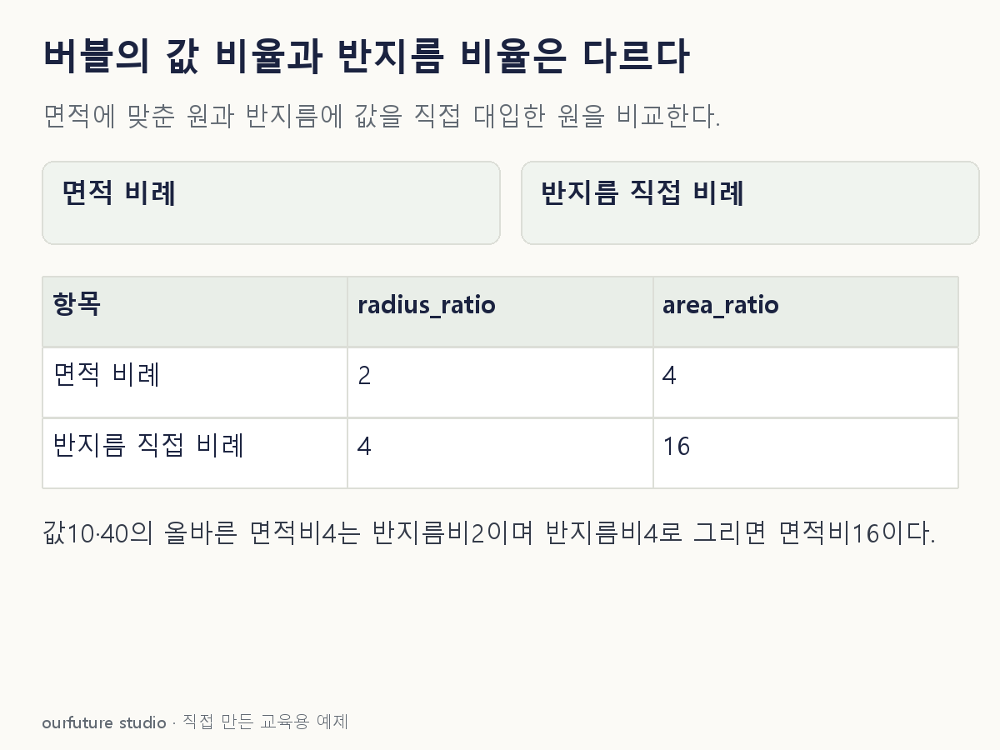

핵심 이론
버블차트의 가로·세로 위치는 두 수치 변수의 관계를 나타내고, 원의 크기는 추가 변수를 나타낼 수 있다. 색을 다른 범주나 수치에 연결할 수도 있지만 어떤 변수가 어느 시각 요소에 들어갔는지 각각 정의해야 한다. 같은 위치에서 크기만 달라졌다면 위치 변수까지 증가했다는 뜻은 아니다. ‘큰 원이 더 좋다’ 같은 평가도 범례의 변수 의미와 목표를 확인한 뒤에만 가능하다.
원의 면적 A=πr²다. 면적이 자료값 v에 비례하도록 설계했다면 r은 √v에 비례한다. 값10과40의 면적 비율은4이고 반지름 비율은√4=2다. 값의 비율을 그대로 반지름에 적용해4배로 그리면 면적은16배가 되어 의도와 다른 강조가 된다. 모든 도구가 같은 크기 정의를 쓰는 것은 아니므로 면적·반지름·지름 중 어떤 것에 비례하는지 명시한다.
Matplotlib의 scatter에서 s는 제곱 포인트 단위의 마커 크기다. 같은 원형 마커와 동일한 스타일을 쓰는 이상적인 비교에서는 면적 비율을 맞추는 방식으로 사용할 수 있다. 테두리 두께와 겹침이 보이는 크기에 영향을 줄 수 있으므로 작은 원은 특히 주의한다. 범례와 반투명도·표시 순서 등을 조정해 원이 가려진 사실을 값0으로 오인하지 않게 한다. 도형의 크기는 데이터의 불확실성이나 표본수를 자동으로 말해주지 않는다.
작은 예제로 확인하기
자체 버블 두 개의 크기 변수는 A10·B40이다. 같은 원형·스타일에서 원의 면적을 그 값에 비례시키며 테두리 영향은 제외한다.
| 버블 | 값 v | 상대 면적 | 상대 반지름 |
|---|---|---|---|
| A | 10 | 1 | 1 |
| B | 40 | 4 | 2 |
예를 들어 면적을10π와40π로 잡으면 반지름은√10과√40이다. B/A의 반지름 비는2다. 위치 좌표와 색은 이 계산에 사용하지 않으며, 원 크기를 읽는 문제와 두 위치의 상관을 읽는 문제를 섞지 않는다.
그림으로 확인하기

직접 고르기
같은 원형 버블의 면적이 값에 비례한다. A의 값은 10, B의 값은 40이고 테두리 영향은 제외한다.
B의 반지름은 A의 몇 배인가?
- 1. 1배
- 2. 2배
- 3. 4배
- 4. 16배
정답과 오답의 이유 확인하기
정답 2번 — 2배
면적은 4배이지만 반지름은 면적의 제곱근에 비례하므로√(40/10)=2배다. 값의 비율과 길이의 비율을 구분한다.
- 1번: 값과 면적이 서로 다르므로 반지름도 같을 수 없다.
- 3번: 면적 비율 4를 반지름 비율로 그대로 사용했다.
- 4번: 면적 비율을 다시 제곱한 값이며 반지름을 구할 때는 제곱근을 써야 한다.
조건 하나 바꾸어 풀기
자료값은 10과 40인데 반지름을 값에 직접 비례시켜 B를 A의 4배로 그렸다. 면적은 몇 배가 되는가?
풀이: 16배다.
면적은 반지름의 제곱에 비례해 4²=16배가 된다. 면적으로 크기를 읽는 독자는 원래 값 4배를 지나치게 크게 받아들일 수 있다.
다시 떠올릴 단서
면적의 네 배는, 반지름의 두 배.
근거와 적용 조건
- Matplotlib pyplot.scatter — s의 제곱 포인트 단위와 c·x·y. 확인일 2026-10-30.
상황·수치·보기·조건 변경은 자체 교육 예제다. 민간 복원 문항의 공식 정답이나 실제 성능·학습 효과를 뜻하지 않는다.
읽은 내용을 적용해 보기
테두리·겹침을 제외한 이상적인 동일 원형이다. 모든 도구의 s 단위를 반지름으로 해석하지 않는다.